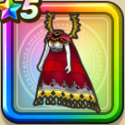

霊獣のビスチェ上
攻略班 7.5点 / イオ属性耐性+5%デイン属性耐性+5%イオ属性耐性+5%暴嵐の四天王へのダメージ+10%【賢者】じゅもんダメージ+2%デイン属性ダメージ+5%
くわしい特徴
【レベル別習得スキル】 Lv1イオ属性耐性+5% Lv5暴嵐の四天王へのダメージ+10% Lv8さいだいMP+5 Lv10デイン属性耐性+5% Lv12【賢者】じゅもんダメージ+2% Lv15デイン属性ダメージ+5% Lv18イオ属性耐性+5% Lv20【賢者】さいだいHP+5 Lv23さいだいHP+5 Lv25守備力+7 【限界突破スキル】 1凸攻撃魔力+5 2凸すばやさ+7 3凸守備力+5 4凸さいだいMP+10